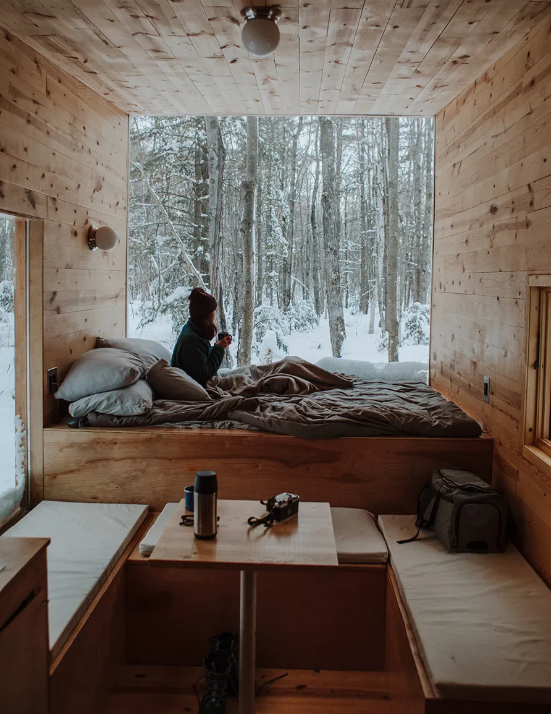
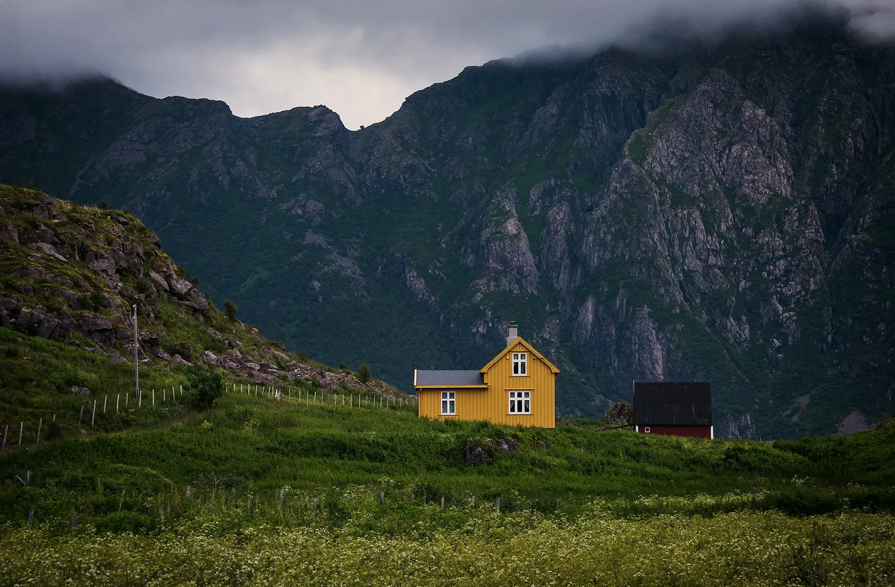

Tiny-house movement
By Wikipedia
2022-11-24
#Alternative home
The tiny-house movement (also known as the small house movement)is an architectural and social movement that advocates for downsizing living spaces, simplifying, and essentially "living with less." According to the 2018 International Residential Code, Appendix Q Tiny Houses, a tiny house is a "dwelling unit with a maximum of 37 square metres (400 sq ft) of floor area, excluding lofts." The term "tiny house" is sometimes used interchangeably with "micro-house".[1] While tiny housing primarily represents a return to simpler living, the movement was also regarded as a potential eco-friendly solution to the existing housing industry, as well as a feasible transitional option for individuals experiencing a lack of shelter. This distinction is important as many people look to place tiny houses on empty lots, however if a tiny house lacks any one of the necessary amenities required for a dwelling unit then it is an accessory structure and must be placed on the same lot as a primary structure per the 2018 International Residential Code. There are a variety of reasons for living in a tiny house. Many people who enter this lifestyle rethink what they value in life and decide to put more effort into strengthening their communities, healing the environment, spending time with their families, or saving money.
Background
In the United States, the average size of new single family homes grew from 1,780 square feet (165 m2) in 1978, to 2,479 square feet (230.3 m2) in 2007, and further still to 2,662 square feet (247.3 m2) in 2013.[5][6] Increased material wealth and individuals with high incomes are common reasons why home sizes increased. The small house movement is a return to houses of less than 1,000 square feet (93 m2). Frequently, the distinction is made between small (between 400 and 1,000 sq ft or 37 and 93 m2), and tiny houses (less than 400 sq ft or 37 m2), with some as small as 80 square feet (7.4 m2).

"No space are too small"
Tiny houses on wheels were popularized by Jay Shafer who designed and lived in a 96-square-foot (8.9 m2) house and later went on to offer the first plans for tiny houses on wheels, initially founding Tumbleweed Tiny House Company, and then Four Lights Tiny House Company on September 6, 2012.[20] In 2002, Shafer co-founded, along with Greg Johnson, Shay Salomon and Nigel Valdez, the Small House Society.[21] Salomon and Valdez subsequently published their guide to the modern Small House Movement, Little House on a Small Planet (2006) and Johnson published his memoir, Put Your Life on a Diet (2008).
With the Great Recession hitting the world's economy from 2007 to 2009, the small house movement attracted more attention as it offered affordable, ecologically friendly housing.[22] Overall, it represented a very small part of real estate transactions. Thus, only 1% of home buyers acquire houses of 1,000 square feet (93 m2) or less.[23] Small houses are also used as accessory dwelling units (or ADUs), to serve as additional on-property housing for aging relatives or returning children, as a home office, or as a guest house.[23] Tiny houses typically cost about $20,000 to $50,000 as of 2012.[23]
Tiny houses have received considerable media coverage[24] including a television show, Tiny House Nation,[25] in 2014 and Tiny House Hunters.[18] Bryce Langston from New Zealand created and hosts a YouTube channel that features international tiny homes and eco-friendly living, called Living Big in a Tiny House[26]
Tiny houses on wheels are often compared to RVs. In Canada and the United States, these are called park model RVs if they do not exceed certain size specifications, namely 50 m2 (540 sq ft) in Canada and 400 sq ft (37 m2) in the United States.[27] However, tiny homes are held to state/provincial/territorial building codes. Park model RVs are held to standards set by the Standards Council of Canada or RV Industry Association (RVIA).[27] Tiny houses are built to last as long as traditional homes, use traditional building techniques and materials, and are aesthetically similar to larger homes.[28]
Outside the United States
While the movement is most active in America, interest in tiny homes has been observed in other developed countries.

Tiny yellow house in Norway
In Australia some interest commenced through designers such as Fred Schultz[29] and builders such as Designer Eco Tiny Homes, Designer Eco Tiny Homes is Australia's largest tiny home builder and has been at the forefront of the tiny home movement in Australia since 2016. Owned by Grant Emans and running out of 2 factories in Ulladulla on the south coast of NSW, Designer Eco Tiny Homes employees over 40 people and makes 100 tiny homes per year. In 2022 Designer Eco Tiny Homes opened the world's first tiny home showroom and also added a new tiny home model to its list, which at 9.6 metres long is the longest, tiny home in Australia. and TechnoPODS.[30] T.I.T.A.N. Hills along Victoria's scenic Great Ocean Road, is the world's first master-planned, ecological, off-grid, tiny home subdivision.
In Canada, the legality of tiny homes can depend on the location and whether the home is mobile or stationary.[31] In Toronto, a tiny house requires a building permit and connection to the grid.[31] In December 2019, Edmonton introduced bylaws allowing tiny homes on foundations, removing the former 5.5-metre minimum-width requirement.[32] Some municipalities consider buildings which are not connected to city electricity and sewerage systems to violate their building codes.[31] This has been described by some as an attempt to avoid situations similar to the Leaky Condo Crisis in British Columbia, which resulted in the establishment of stricter building codes.[33] Similarly, some mobile tiny homes have been rejected from spaces designed for RVs due to the property not meeting the same criteria the vehicles are held to.[34] An "eco-village" of homes under 600 square feet (56 m2) in Okotoks known as the Homestead Project was proposed in 2017 but met opposition from some Okotoks residents.[35][36] In August 2019 the council voted not to consider the project further after deciding to honour a petition with 3,000 signatures opposed to the development.[37]
In September 2019 in France, the “Ty Village” has open its door at 6 km from the nearby University of Saint Brieuc in the department of Bretagne.[38]
In Germany, the community of Vauban created 5000 households on an old military base in Freiburg. The planned density of the building on that area is of 50 dwelling units per acre.[39] Also in Germany, British architect Richard Horden and the Technical University of Munich developed the Micro Compact Home (M-CH), a high-end small[5] (76 sq ft or 7.1 m2) cube, designed for 1–2 persons, with functional spaces for cooking, hygiene, dining/working, and sleeping.[40]